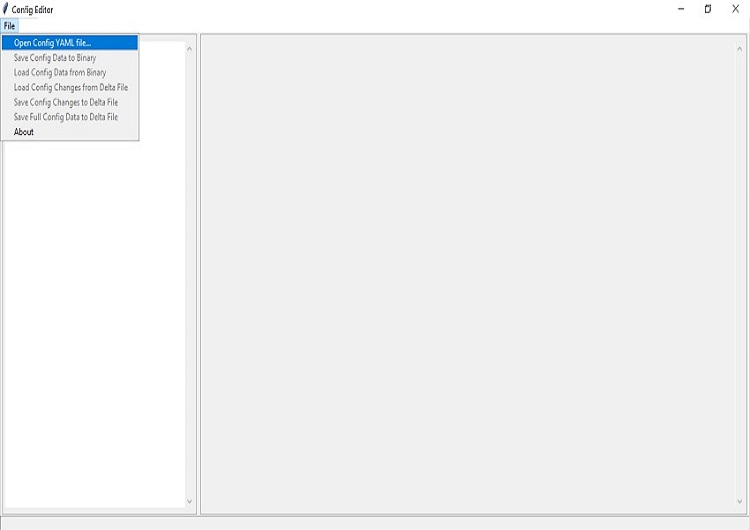

Change Boot Options
SBL has a default list of boot options. A example list is provided below. It attempts to boot from the first entry. If it fails to load anything bootable, it tries the subsequent options. If none of the boot options are working, it fallbacks to shell. When SBL is built for release mode, fallback to Shell is disabled for security considerations.
Example Boot Options List:
eMMC boot partition 0
eMMC boot partition 1
SATA boot partition 0
USB boot partition 0
Boot options can be pre-configured during build or they can be configured post-build and during image stitch.
Change at Pre Build Time
Please follow the below steps to make the changes before buiding SBL.
Step1. In the console launch the “ConfigEditor” from “slimbootloader” folder.
Command : python BootloaderCorePkg/Tools/ConfigEditor.py

Step2. Open the “Config YAML” file, then select the description file according to your platform( eg. /Platform/CoffeelakeBoardPkg/CfgData/CfgDataDef.yaml”)
{kind=link}
{kind=link}
Step 3. Load the “Config Delta” file from the same folder of the description file by selecting “Load Config Changes from Delta File” menu.

{kind=link}
Step 4. At the menu panel in left, select the “OS Boot options”, and go the Boot option number which needs to be updated.
{kind=link}
Example: Update boot device 0 to usb
{kind=link}
Step 5. Save the changes with “save config changes to Delta File” to the required board specific dlt file
{kind=link}
{kind=link}
After saving, changes shall be reflected in the dlt file. Open the corresponding dlt file in notepad and check if the value is updated accordingly.
Step 6. Now rebuild the SBL and flash it to the target. SBL will apply the new settings on subsequent boots.
Change at Post Build time
Use Configuration Editor to modify a boot option entry then stitch the update configuration data component in SBL.
Follow steps 1 to 6. Changes get saved into the dlt file. Copy the generated .dlt file into the same directory where CfgDataStitch.py is located
Run CfgData Stitch Utility
Config data stitch utility is available in the generated FV folder.
CfgDataStitch.py script:
python CfgDataStitch.py <option 1> <option 2> <option 3> <option 4>
option 1 : Input file
option 2 : Output file
option 3 : Cfgdata directory
option 4 : Tool directory
Example: Python CfgDataStitch.py -i sbl_ifwi.bin -o Newifwi.bin -c . -t ../BootloaderCorePkg/Tools
Outputs
If the stitch is successful, new IFWI file with patched cfgdata shall be generated in the output directory.
{kind=link}
Change at Runtime
If the boot option is already supported in SBL boot option list, you can change its values from SBL shell interface.
For example, to switch boot options of index 0 and 3:
Press any key within 2 second(s) to enter the command shell
Shell>
Shell> boot
Boot options (in HEX):
Idx|ImgType|DevType|DevNum|Flags|HwPart|FsType|SwPart|File/Lbaoffset
0| 0| SD | 0 | 0 | 0 | AUTO | 0 | container.bin *Current
1| 0| SATA | 0 | 0 | FF | AUTO | 0 | container.bin
2| 0| NVME | 0 | 0 | 0 | AUTO | 0 | container.bin
3| 0| USB | 0 | 0 | 0 | AUTO | 0 | container.bin
SubCommand:
q -- quit boot option change
s -- swap boot order by index
c -- set the boot index
idx -- modify the boot option specified by idx (0 to 3)
s
Enter first index to swap (0x0 to 0x3)
0
Enter second index to swap (0x0 to 0x3)
3
Updated the Boot Option List
Boot options (in HEX):
Idx|ImgType|DevType|DevNum|Flags|HwPart|FsType|SwPart|File/Lbaoffset
0| 0| USB | 0 | 0 | 0 | AUTO | 0 | container.bin *Current
1| 0| SATA | 0 | 0 | FF | AUTO | 0 | container.bin
2| 0| NVME | 0 | 0 | 0 | AUTO | 0 | container.bin
3| 0| SD | 0 | 0 | 0 | AUTO | 0 | container.bin
Shell> exit
SBL shall boot from USB by attempting loading the container image container.bin from partition 0. If container image is not found, it fallbacks to loading vmlinuz. If nothing is bootable, it returns to shell.